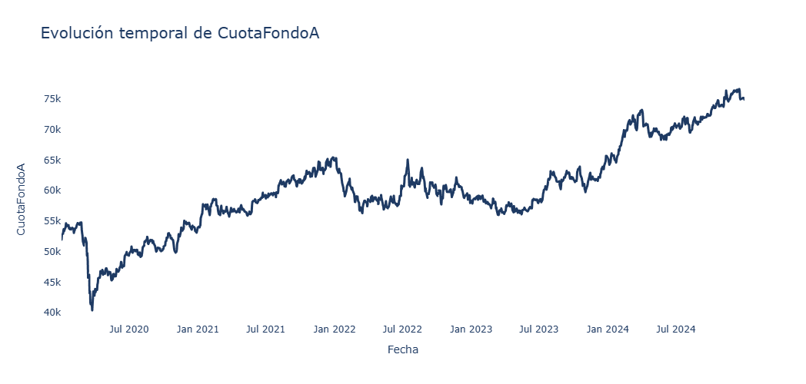

Data Science · Finance
Fondos de Pensiones y Volatilidad
Análisis de la evolución del Fondo A de AFP chilenas (2019-2024), identificando patrones de dependencia y riesgo real frente a índices bursátiles globales.
Python
Pandas
Series de Tiempo
yfinance
Ver Caso de Estudio